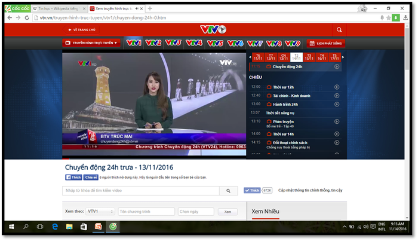
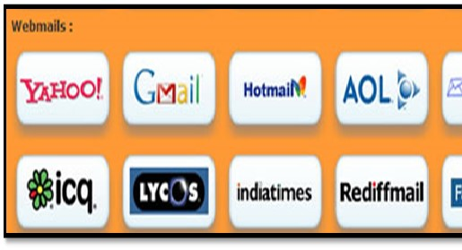
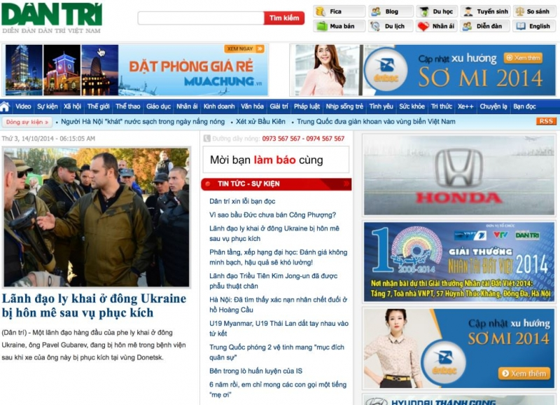

Tin học đã góp phần không nhỏ để đổi mới các dịch vụ kĩ thuật truyền thông Giải pháp tin học cùng với công nghệ truyền thông hiện đại đã tạo ra được mạng InternetCơ sở trên đã phát triển được nhiều dịch vụ tiện lợi đa dạng như: thương mại điện tử, đào tạo điện tử, chính phủ điện tử,... Tạo khả năng dễ dàng truy cập kho tài nguyên tri thức của nhân loại
Ngày nay, có rất nhiều phương tiện truyền thông để những người làm công tác marketing tiếp cận với khách hàng: phương tiện điện tử (truyền hình và radio), báo chí, bán hàngonline, trang web. Internet đứng đầu trong các phương tiện thông tin đại chúng, đặc biệt truyền thông mạng xã hội (Social Media) như: Facebook, Twitter, Yahoo. Theo thống kê khoảng 45,6% số người lứa tuổi từ 18-54 cho biết họ chọn Internet là phương tiện truyền thông hay nhất. Truyền hình cũng là phương tiện truyền thông quan trọng. Báo chí là phương tiện truyền thông khá phổ biến hiện nay. Ngoài ra còn có nhiều phương tiện truyền thông phổ biến khác như: sách, điện ảnh, phát thanh, quảng cáo, băng đĩa.
Xem các chương trình truyền hình trên mạng máy tính
Chat - Hòm thư điện tử (e-mail
Các trang báo điện tử
End!
Wed full html thuần